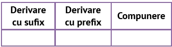

Consultă un dicționar!
Transcrie cuvintele înrudite ca sens cu adjectivul roșu din lista următoare: roșeață, roșcovă, (a) înroși, roșu-închis, roșcovan, a roși, Împăratul Roșu, roșioară, Lacul Roșu, mașină roșie, pătlăgică-roșie, roșiatic, Marea Roșie, pieile-roșii.
Precizează mijloacele de îmbogățire a vocabularului prin care s-au format cuvintele selectate la exercițiul 1.
Alcătuiește familia lexicală a cuvintelor țară, pădure, bun, a face.
Completează un tabel asemănător celui dat cu termenii din familia lexicală a cuvântului piatră: pietricică, pietroi, Piatra Arsă, Piatra Craiului, pietriș, nepietruit, pietrar, pietros, pietrărie, (a) pietrui, piatră-de-var.
Exclude, oral, din seriile următoare, cuvintele care nu fac parte din familia lexicală indicată:
Citeşte, cu atenţie, următorul fragment, pentru a răspunde, oral, cerințelor de mai jos:
„… fără să bănuiască nici un moment adevărul: că, la rândul lui, el nu trăiește în realitate, că e și el doar un personaj din povestirea mea și că eu, scriitorul, pot să-l fac să meargă pe role mai departe, să se oprească, să dea colțul străzii, să se împace cu Ana, să se ducă la școală, chiar dacă-i vacanța, și să ia numai zece sau numai doi, și orice-mi mai trece mie prin minte.” (M. Cărtărescu, Florin scrie un roman)
Notează A (adevărat) sau F (fals) pentru enunțurile:
Limba română
26